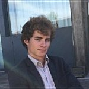

Tom Dupré la Tour
Ph.D. student
I am a second-year Ph.D. student at Telecom ParisTech in France. I am supervised by Alexandre Gramfort and Yves Grenier. I graduated from Ecole polytechnique and EPFL in 2015. My work focuses on brain functional imaging (MEG, EEG), signal processing and machine learning.
Publications
Software
Experience
Teaching
Education
I have published the following articles:
I am a teaching assistant in the following courses:
I am contributing to the following open-source projects:
Implementation of optimization algorithms (SAG, cd-NMF, mu-NMF), library maintenance.
I have received the following education:
Signal Processing, Image Processing, Video compression, Machine Learning,
Distributed Information Systems, Wireless Transmission Algorithms, Microwaves, Photonics.
Research project on Human Echolocation.
1st et 2nd years : cross-curricular formation, with Mathematics, Physics and Informatics.
3rd year : specialization in Electrical Engineering : Computer Architecture, Printed Circuit Board Design, Semiconductor Physics, Photovoltaic, Signal Processing, Opto-Electronic.
A 2-year intensive undergraduate program for admission to France’s top engineering schools. Mathematics, Physics.
I have worked on the following projects:
Development of scikit-learn,
an open source machine learning library in python,
supervised by Alexandre Gramfort. Developed SAG and NMF algorithms. 5 months
Image processing research on motion deblurring.
Literature review, prototyping on Matlab, state of the art improvement (not published). 6 months
Research on a new calculus paradigm using stochastic binary signals.
Matlab simulations and implementation of these gates with analogic CMOS circuit (with Cadence). 3 months
Lead a first aiders unit at Paris Fire Brigade. 7 months